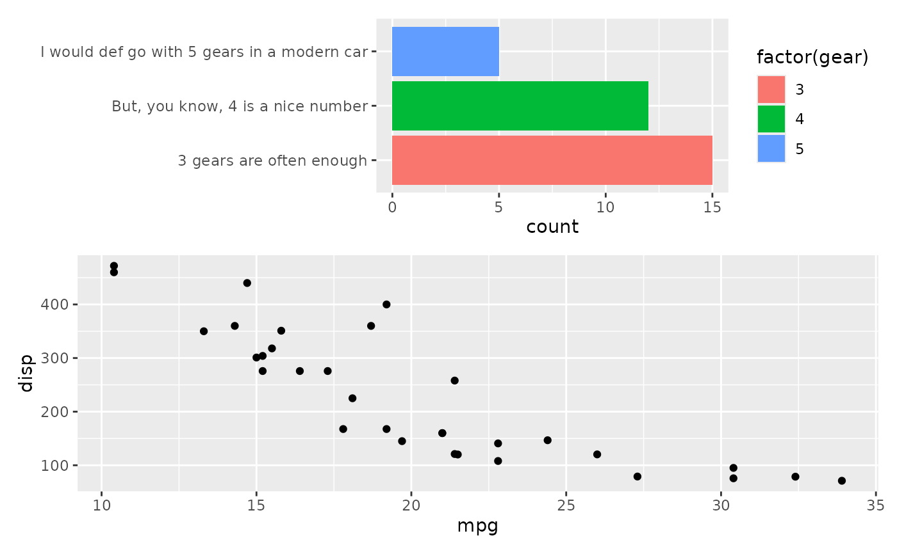

Free from alignment
Source:R/alignpatch-free-align.R, R/alignpatch-free-border.R, R/alignpatch-free-lab.R, and 1 more
free.Rdalign_plots will try to align plot panels, and every elements of the plot, following functions romove these restrictions:
free_align: if we want to compose plots without alignment of some panel axes (panel won't be aligned). we can wrap the plot withfree_align.free_border: If we want to compose plots without alignment of the panel borders (but still align the panels themselves), we can wrap the plot withfree_border.free_lab: If we want to compose plots without alignment of the axis title, we can wrap the plot withfree_lab.free_space: Removing the ggplot element sizes when aligning.
Usage
free_align(plot, axes = "tlbr")
free_border(plot, borders = "tlbr")
free_lab(plot, labs = "tlbr")
free_space(plot, ...)Arguments
- plot
A ggplot or alignpatches object.
- axes
Which axes shouldn't be aligned? A string containing one or more of
"t","l","b",and"r".- borders
Which border shouldn't be aligned? A string containing one or more of
"t","l","b",and"r".- labs
Which axis labs to be free? A string containing one or more of
"t","l","b",and"r".- ...
What sizes of the ggplot2 elements to remove? Allowed values are:
"title","subtitle","xlab-t","axis-t","strip-t","patch-title-top","margin-t","ylab-l","axis-l","strip-l","patch-title-left","margin-l","caption","xlab-b","axis-b","strip-b","patch-title-bottom","margin-b","ylab-r","axis-r","strip-r","patch-title-right", and"margin-r". Some unions also allowed:"t"/"top: "title", "subtitle", "xlab-t", "axis-t", "strip-t", "patch-title-top", "margin-t"."l"/"left": "ylab-l", "axis-l", "strip-l", "patch-title-left", "margin-l"."b"/"bottom": "caption", "xlab-b", "axis-b", "strip-b", "patch-title-bottom", "margin-b"."r"/"right": "ylab-r", "axis-r", "strip-r", "patch-title-right", "margin-r"."x": "xlab-t", "axis-t", "strip-t", "xlab-b", "axis-b", "strip-b"."y": "ylab-l", "axis-l", "strip-l", "ylab-r", "axis-r", "strip-r"."xlab"/"xlabs": "xlab-t", "xlab-b"."ylab"/"ylabs": "ylab-l", "ylab-r"."lab"/"labs": "xlab-t", "xlab-b", "ylab-l", "ylab-r"."axis"/"axes": "axis-t", "axis-b", "axis-l", "axis-r"."strip"/"strips": "strip-t", "strip-b", "strip-l", "strip-r"."patch-title"/"patch-titles": "patch-title-top", "patch-title-left", "patch-title-bottom", "patch-title-right"."margin"/"margins": "margin-t", "margin-l", "margin-b", "margin-r".
Value
free_align: A modified version ofplotwith afree_alignclass.
free_border: A modified version ofplotwith afree_borderclass.
free_lab: A modified version ofplotwith afree_labclass.
free_space: A modified version ofplotwith afree_spaceclass.
Examples
# directly copied from patchwork
# Sometimes you have a plot that defies good composition alginment, e.g. due
# to long axis labels
p1 <- ggplot(mtcars) +
geom_bar(aes(y = factor(gear), fill = factor(gear))) +
scale_y_discrete(
"",
labels = c(
"3 gears are often enough",
"But, you know, 4 is a nice number",
"I would def go with 5 gears in a modern car"
)
)
# When combined with other plots it ends up looking bad
p2 <- ggplot(mtcars) +
geom_point(aes(mpg, disp))
align_plots(p1, p2, ncol = 1L)
# We can fix this be using free (here, with the default "panel" type)
align_plots(free_align(p1), p2, ncol = 1L)

# If we still want the panels to be aligned to the right, we can choose to
# free only the left side
align_plots(free_align(p1, axes = "l"), p2, ncol = 1L)
 # We could use "label" to fix the layout in a different way
align_plots(p1, free_lab(p2), ncol = 1L)
# Another issue is that long labels are not using already available free
# space.
align_plots(NULL, p1, p2, p2)
# We could use "label" to fix the layout in a different way
align_plots(p1, free_lab(p2), ncol = 1L)
# Another issue is that long labels are not using already available free
# space.
align_plots(NULL, p1, p2, p2)
 # This can be fixed with the "space" type
align_plots(NULL, free_space(p1, "l"), p2, p2)
# This can be fixed with the "space" type
align_plots(NULL, free_space(p1, "l"), p2, p2)